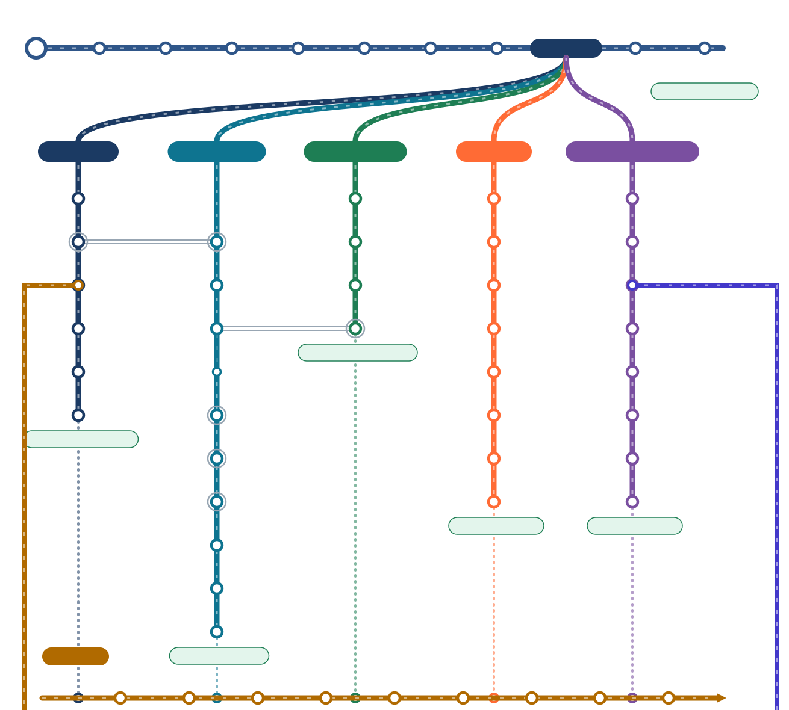

❄️ Le réseau thermo-techno
96 stations · 15 lignes CAP → BTS · habilitation fluides
Le métier de frigoriste : la chaleur, le circuit et ses organes, les gestes, les fluides, la régulation, l’huile, le CO₂.
▶ Du glaçon au circuit Les organes Les gestes La régulation Le CO₂